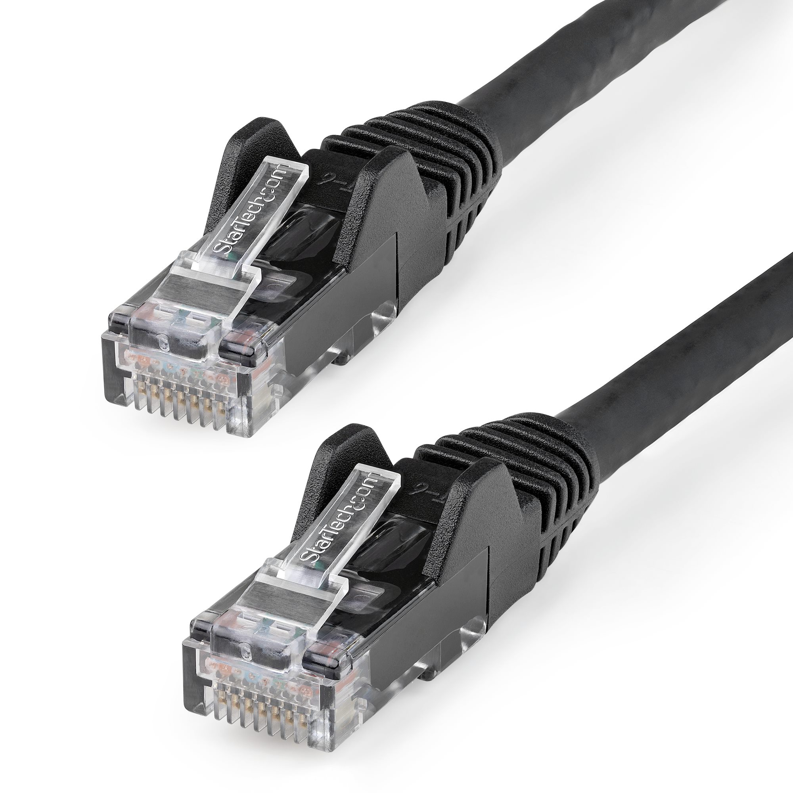

El cableado de red es la infraestructura que se necesita para interconectar los equipos informáticos y que la información fluya a través de la red. Los distintos tipos de cables se determinan según el tipo de red y el tamaño de esta.

Volver